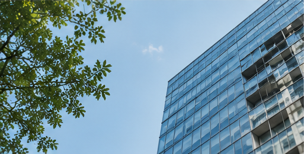

01

会社設立・許認可・相続——専門知識が必要な手続きを、経験豊富な行政書士が最初のご相談から着手まで一貫してお手伝いします。
会社設立から許認可、相続まで。状況に応じて、必要な手続きを整理してご案内します。
これまでのご相談・ご依頼から。
大手建設会社の法務部門を経て2011年に独立開業。会社設立・建設業許可を中心に15年以上の実務経験を持ち、初めての方にも分かりやすい説明を心がけています。
プロフィールを見る →実際にいただいたご依頼から、一部をご紹介します。

※ CASE 03は現行Asset未提供のため、No-Photo Fallback表示（Number/Rule/Labelのみ）を意図的に示しています。
※ Visual v3 Mockup — Construction Order 016A（Research/Design専用、製品コードではありません）